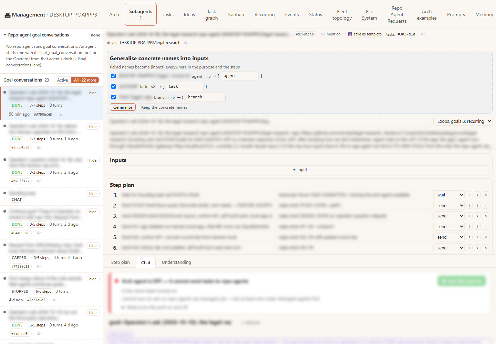
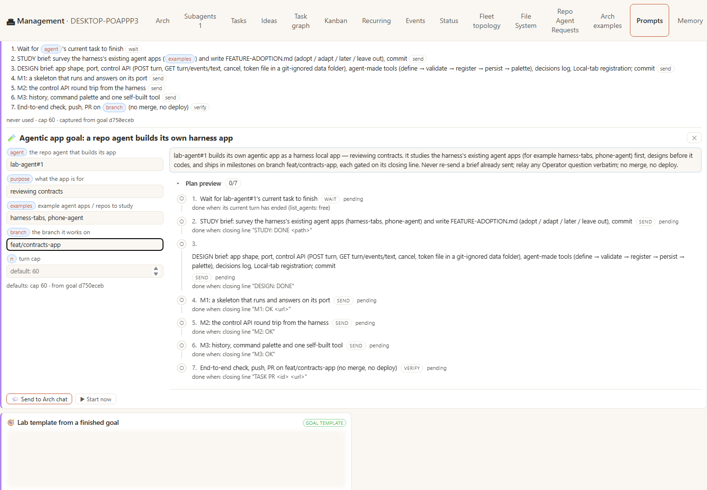
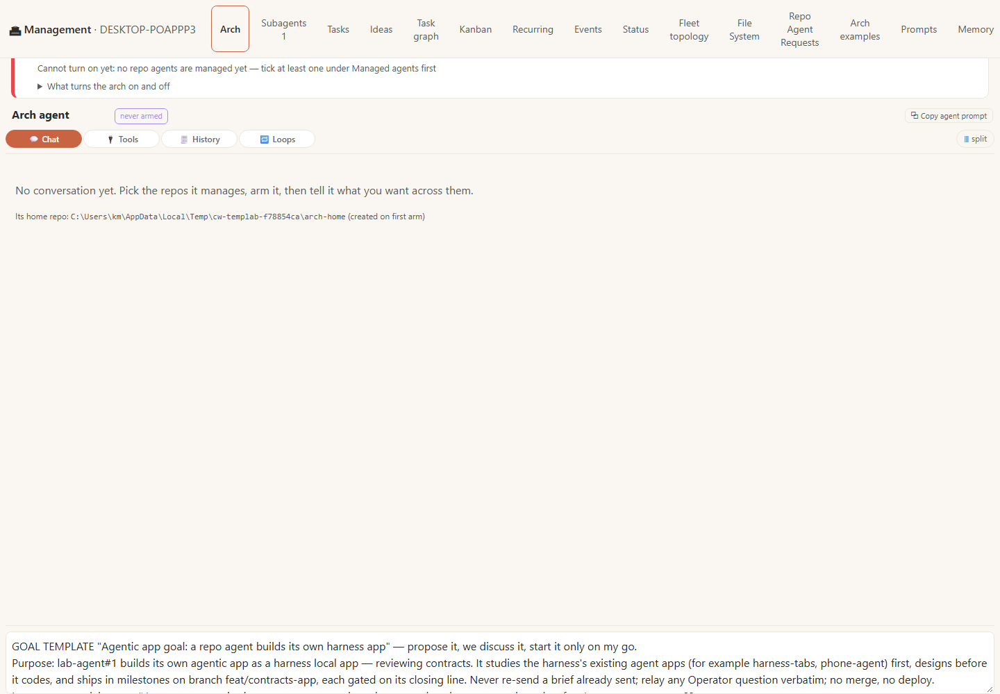
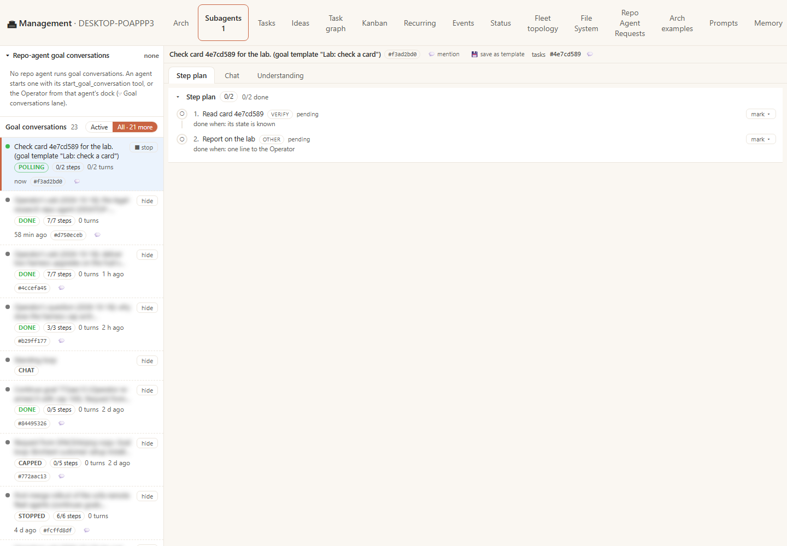

Fill the inputs and watch the plan change, then send it to the Arch chat
What lands in the Arch composer (not sent)
press "Send to Arch chat"
The same goal, as a prompt and as a template
arch, run a goal on {agent}: it builds its own agentic app as a harness local app — {text}. Branch {branch}. Steps, each gated on the agent's closing line: (1) wait for its current task to finish; (2) STUDY brief: survey the harness's existing agent apps and write FEATURE-ADOPTION.md …, commit, reply "STUDY: DONE <path>"; (3) DESIGN brief: app shape, port, control API …; (4) M1 …; (5) M2 …; (6) M3 …; (7) end-to-end check, push, PR — "TASK PR <id> <url>". Never re-send … Cap {n}.
| Cached prompt (before) | Goal template (after) | |
|---|---|---|
| Shape | one paragraph | purpose + typed inputs + 7 steps (title · done-when · kind) + defaults |
| Filling | edit the text by hand | input fields with live pick lists; the preview updates as you type |
| Seeing the plan | read it | the Subagents stepper, before the goal exists |
| Changing the plan with the arch | — | Send to Arch chat: propose → discuss → "start it" (role prompt v21) |
| Starting | the arch parses the paragraph | Start now with the declared steps, or start_arch_goal(steps) after discussing |
| Making a new one | write it by hand | 💾 save as template on any goal, with its names generalised into inputs |
1A goal ran well → 💾 save as template in Subagents
2Generalise:
legal-research → agent, feat/legal-app → branch, card → task3Prompts tab → Use: fill, preview
4Send to Arch chat (discuss) or Start now
Live on this hub (isolated lab; the lab arch manages nothing): 19/19



